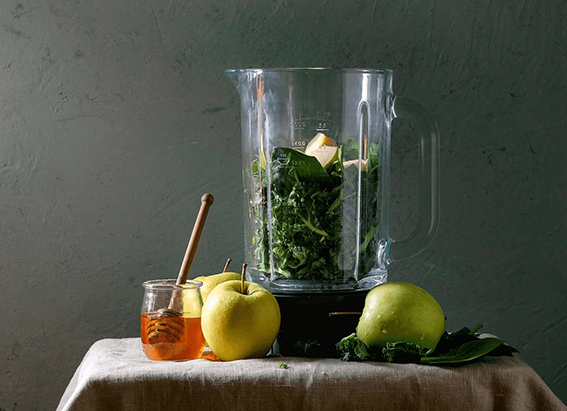
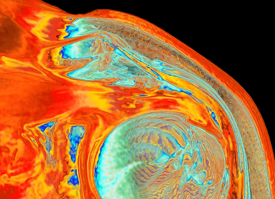

NATIONAL GEOGRAPHIC
Everything to Know About Tokyo
TRAVEL
Tokyo can feel energetic one moment and calm the next, green then gray, forward thinking then stubbornly old-fashioned. Harajuku is youthful. Neighboring Omotesando is chic. The Izu Islands are sedate. Like a Noh actor, the city wears many masks, each bringing a new dynamic to the stage.
When to Go
There's no bad time for Tokyo. The city rarely freezes, although in July and August it gets very hot and humid. If you can, go in late March or early April to catch the cherry blossoms or in October and November, when (save for the tail of an occasional typhoon) the weather is mostly clear, warm, and sunny, and autumnal colors are just beginning to repaint parts of the city.
Celebrate
Tokyo's lineup of annual festivals reaches a vibrant fever pitch in the height of summer. At the Sumidagawa Hanabi Taikai, 20,000 fireworks decorate the night sky on the final Saturday of July. A month later, the Koenji Awa-odori sees one million spectactors cramming the streets of Koenji to watch troupes of dancers and musicians 10,000 in all perform traditional Awa dances late into the sultry night.
What to Eat
In one word: everything. Tokyo is one of the great epicurean cities. Don't miss classics like ramen and sushi, but also look for Tokyo specialties such as the sumo staple chanko nabe hotpot (best in the Ryogoku area) and the gloopy, moreish mess that is monjayaki in Tsukishima.
Souvenir to Take Home
Try Japan Traditional Crafts, Aoyama Square for a distinctly Japanese souvenir. The 200 or so products from lacquerware and ceramics to wooden dolls and textiles are all government-designated traditional crafts, meaning each has been in production for over a centrury and is predominantly handmade using traditional materials. Or explore the Kappabashi-dori shopping street. The stores here provide Tokyo's restaurant trade with all sorts of hardware, from chopsticks and knives to chef's outfits and the plastic replicas of dishes found in restaurant window displays.
Sustainable Travel Tip
Sushi is high on many people's must-eat list in Tokyo. Just be aware that certain sushi staples are dangerously overfished, and, in particular, consider skipping freshwater eel (unagi) and bluefin tuna (maguro). Japan consumes about 80 percent of the global bluefin tuna catch, the population of which some reports put at less than three percent of its historic high.
Comments :
- john Very good
- john Very good
Leave a Reply
Your email address will not be published. Required fields are marked*
Related posts:
-
 Vitamin C, retinol, biotin Here’s what your skin actually needs
Vitamin C, retinol, biotin Here’s what your skin actually needsAs the body’s largest organ, it makes sense that the skin should be kept healthy and clean. Plus, vanity is a strong motivator humans may have evolved to analyze others’ skin to determine their health
View article -
Chicken soup Tea Here’s what to feed your body when it’s sick
Chicken soup. Half a grapefruit. Steaming hot tea. When you’re sick everyone from grandma to the next-door neighbor has a helpful suggestion for food that will put you on the road to recovery
View article -
Frozen shoulder is a real condition and it mostly affects women
Ford has noticed that a subset of her patients all women entering or past menopause come to their appointments with a seemingly non gynecological issue: adhesive capsulitis or “frozen shoulder,”
View article